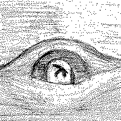

Haskellari is a collection of Haskell libraries maintained by Oleg Grenrus with help of Andrew Lelechenko and others.
These libraries are (a) largely feature-complete and (b) very dependency light. They are reasonably useful utilities, sitting somewhere between core libraries and heavily-specialised software.
The libraries are in haskellari GitHub organization and include
assoc — swap and assoc: Symmetric and Semigroupy Bifunctorsbinary-instances — Common Binary instancesbinary-orphans — Orphan instances for binarycabal-doctest — A Setup.hs helper for doctest runningedit-distance — Edit distance library for Haskellfunctor-classes-compat — Data.Functor.Classes instances for core packagesinteger-logarithms — Integer logarithmslattices — Fine-grained lattice primitives for Haskelllukko — File lockingmicrostache — Mustache templates for Haskell. microstache to stache is what parsec is to megaparsecOneTuple — Singleton Tuplepostgresql-libpq — Low-level Haskell bindings for libpqpostgresql-simple — Mid-level client library for accessing PostgreSQL from Haskellquickcheck-instances — Instances for QuickCheck classessplitmix — Pure Haskell implementation of SplitMix pseudo-random number generatortime-compat — Compatibility package for timetree-diff — Diffing of (expression) trees